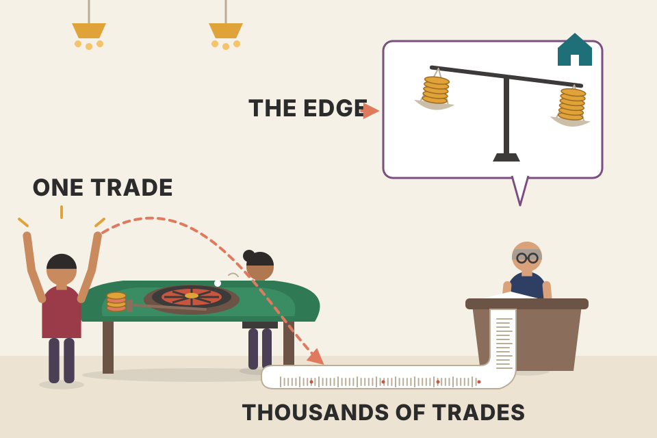
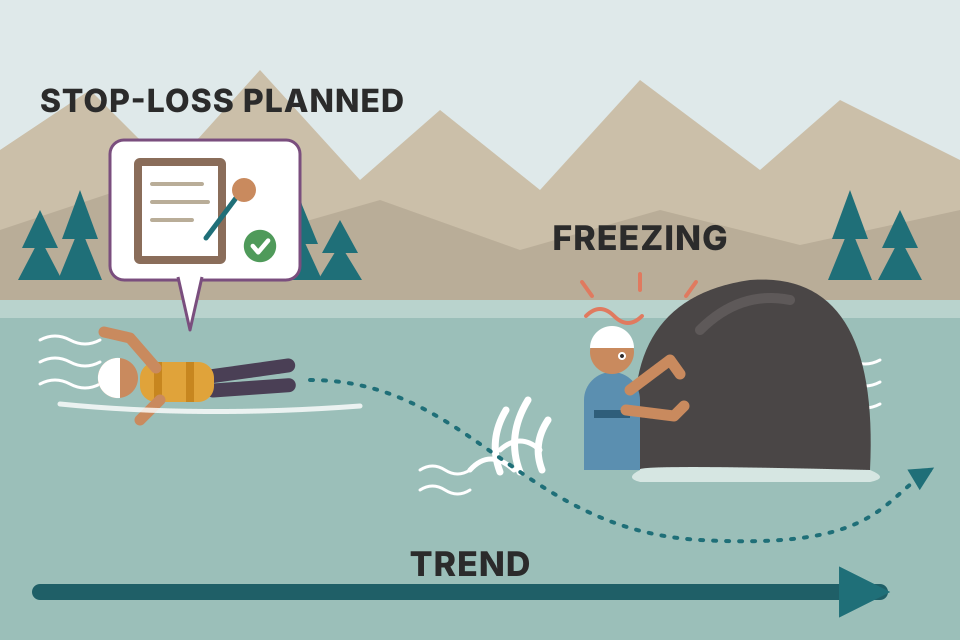

The front of the book has no setups and no charts. It's two people telling you how to think before you trade: Peter Borish (foreword) on why trading is about probabilities, size and personality, and John Carter (introduction) on why most newcomers get eaten, why markets move in sudden bursts, and why sharing his setups mostly doesn't kill them. Every idea from those seven pages is below, in the book's order. The charts and simulations are mine and use made-up data, built so you can feel each idea; they are not the author's evidence and not real-market results.
Four headings in the book: Foreword, Introduction, "Who Should Read This Book?" and "A Few Notes on This Updated Edition". They make one argument: the market isn't out to get you, but it is built to punish people without a plan, so know yourself, get an edge, size small and follow the setup.
The foreword is by Peter Borish, who signs as Chairman of OneChicago and former Head of Research for Paul Tudor Jones. Everything in plates 01–05 is his view of the book, not Carter's own words.
A food critic who has eaten everywhere and judges a new restaurant by one question: did I taste anything I hadn't tasted before? For someone with 20+ years in money management, "new" is a high bar. Most trading books repeat the same indicators he already knows.
A security future (single-stock future) is a contract to buy or sell one company's shares at a fixed price on a future date. You don't pay the full value; you post margin, a fraction of it, so every price move is magnified on the money you put up. In the US these traded on OneChicago, which stopped operating in 2020. NSE stock futures in India are the same instrument, and India has a large, active stock-futures market. They are what you trade on FYERS when you buy a stock future instead of the shares. Exchange margins change, so check current numbers before using real ones.
With cash you own the shares, so a 3% move is 3% on your money. With a future you've only put down the margin, so the same 3% move on the whole contract value lands on a much smaller pile: 3% ÷ 20% margin = 15% on your money. The same multiplier works on losses: at 20% margin, a 20% fall in the share price wipes out the whole margin. That's why later chapters talk about margin calls (plate 08) and about size (plate 05).
Borish says Carter insists there is no single approach and no single answer to trading well. Before you can trade profitably, you have to understand your own personality. Every choice you make, from how long you hold a trade to how much of your capital you risk on it, comes from your own built-in preference curves. That's why the book deals with the right approach to trading before it gets to methods.
When the book moves on to the actual process of trading, Borish says it shines again. However long you've been in the markets, there are new approaches or improvements on old ones. His example: as an active trader of stock index futures, he found Carter's use of extreme tick readings very insightful. With any such idea he has three choices: apply it to his own trading, test it further, or ignore it. Trading isn't one-size-fits-all, and Carter doesn't push his ideas on anyone. Each is presented, discussed and then demonstrated.
Two runners in the same marathon need different shoe sizes. Handing your shoes to a friend doesn't make them faster, even if the shoes won you the race. A setup that fits a full-time scalper with a strong stomach can blister a part-timer who checks the market twice a day.
The NYSE TICK is the number of NYSE stocks whose last trade was on an uptick minus the number on a downtick, updated all day. A very high or very low reading means a large basket of stocks was bought or sold at the same moment, which is often program or index-arbitrage activity. Carter's actual thresholds and trade rules are in Ch.9 Tick Fades; the chart below is only a simulated sketch so you know what the indicator looks like. Your slider is your line, not Carter's.
"Preference curve" is an economist's phrase (the term is Borish's; the explanation is mine). It means how much extra reward you need before you'll accept more risk or a longer wait. Two traders with the same edge can rationally choose different holding periods and sizes because their curves differ. A size that feels fine to one makes the other override the system at the worst moment. The apply / test / ignore triage is the healthy way to read any trading book: an idea earns a place in your trading only after it fits you and passes your own test.
Borish notes, with a straight face, that not every trade wins. A setup gives you a probability. Follow it over time and it should lead to success. He calls this the core message Carter repeats again and again. Bad trades happen all the time; how you react to them decides your future success.

A casino. Any single spin of the roulette wheel can go against the house, and some nights a player walks out ahead. The house doesn't care, because it's playing thousands of spins with a small edge. You want to be the house: the edge shows up in the pile of trades, never in one trade.
Expectancy per trade, in units of risk (R), is E = p × reward − (1 − p) × 1. One trade is mostly luck; the average over N trades settles toward E, and its noise shrinks like 1/√N. That's why the grey paths fan out yet the pooled median still climbs when E > 0. Now switch the reaction to "double after each loss". The win rate and the setup don't change, but the biggest bets land at the end of losing streaks, which are guaranteed to happen (plate 05). At 50% / 1.5 the pooled median actually rises (to about 2.7×), because with a real edge the bigger bets also win bigger. Look at the risk, though: the share of traders with a 20%+ drawdown goes from under 1% to about 81%, and the share ending below their start goes from about 3% to about 30%. Now drop the win rate to 40% (zero edge). Steady 1% sizing ends at a median of 0.99×; doubling ends at 0.31×, with 97% of traders taking a 20%+ drawdown. Doubling bets the account on the edge being exactly right. That's Borish's point in numbers: the reaction, not the setup, sinks people.
Win rate 50%, reward 1.5 × risk, risk 1% per trade. E = 0.5 × 1.5 − 0.5 × 1 = +0.25R per trade. Each win multiplies the account by 1.015 and each loss by 0.99, so the typical (median) trader after 100 trades has about 1.01550 × 0.9950 ≈ 1.27× the starting money, which matches the pooled median in the readout. Even so, about 3% of the 2,000 simulated traders finish the 100 trades below where they started. Same setup, different luck.
using_equations_to_trade.md runs the same kind of Monte Carlo on your 51.5% / 2R trendline Break setup: at 1–2% risk every case survived, including the one where the real edge turned out to be zero.Climate and weather. The season says summer (weekly chart: up), today's forecast says a storm (1-minute chart: down). Both are true at the same time. Carrying an umbrella in summer isn't a contradiction; it's choosing which clock you're living by.
The shaded window is "your" timeframe; the readout asks each timeframe the same question: is price higher or lower than N bars ago? Short and long windows often disagree, so both a long and a short can be justified. Then reveal the future. Whichever view turned out right now looks obvious. That's hindsight bias: after the outcome, the losing timeframe seems like a mistake you should have seen. Before the outcome, nothing on the chart told you which clock would win. The only fix is the one Borish credits Carter with: pick your timeframe and risk in advance, and judge yourself on following the process, not on a single result.
backtest_results_summary.md found that a daily-trend filter on 1-hour trades helped out-of-sample. Letting the higher timeframe set the direction and the lower one time the entry is one honest way to combine two clocks.| Losses in a row (k) | Chance of at least one such streak | Account drop after k losses | Gain needed to get back | |
|---|---|---|---|---|
A poker player who buys in with the whole bankroll is out after one bad hand. One who buys in with 2% can sit through a cold deck and still be at the table when the cards turn. "Stay in the game" is literal: you can't collect the edge from trades you can't afford to take.
Drop after k straight losses at risk r: 1 − (1 − r)^k. Gain needed to get back: 1 / (1 − drop) − 1, which grows faster than the drop does. The streak table shows the part people underestimate: at a 50% win rate over 200 trades, a run of 6 losses is about 80% likely and a run of 7 about 54% likely. A typical year contains a 7-loss streak. At 2% risk that's a 13% drop; at 10% risk it's 52%, and you need +109% to recover. Diversifying across markets helps only if the markets don't all lose together (plain Nifty stocks are strongly correlated, so ten of them are not ten independent bets).
| Setup says buy | Setup says sell | |
|---|---|---|
| Chart "looks great" to you | Easy: you take it | Borish's example. The setup is the rule; your bias is the excuse. Follow the setup or don't trade that market. |
| Chart "looks awful" to you | Same conflict, reversed: bias says skip | Easy: you take it |
Only the off-diagonal cells test you. A trader who takes only the trades that agree with their gut isn't trading the setup at all; they're trading their gut, with the setup as decoration.
trader_returns_reality.md: your yearly return ≈ N × E × r. Size (r) multiplies the edge and the losing streaks alike.using_equations_to_trade.md: in your 51.5% / 2R simulation, full-Kelly sizing (27.3%) hit a ≥50% drawdown in 100% of paths, while 1–2% risk never did.Carter says the best lesson he ever learned about short-term trading came on a white-water rafting trip. Step through what happened:

The river is the market's trend: powerful, indifferent, heading where it's going. The rock is a sudden move against you. "On your back, feet downstream" is a stop-loss decided before the trade. "Freezing" is watching a loser grow because no decision was made in advance and none can be made now.
Under stress people are bad at choosing among options, so the swimmers who survived didn't think better in the water; they had decided before they got wet. A stop placed at entry turns a hard real-time decision into a rule. The calculator shows why the freeze is so expensive: losses and gains aren't symmetric. Months of profit wiped = ln(1 / (1 − loss)) ÷ ln(1 + monthly gain).
Make 2% a month for 12 months: 1.0212 ≈ 1.27, so +27%. Then one frozen trade loses 30% of the account: 1.27 × 0.70 ≈ 0.89. A year of good work is gone and you're 11% below where you started. Getting back to the peak takes ln(1/0.70) ÷ ln(1.02) ≈ 18 months of the same steady gains. The trader whose planned stop cost 2% loses about 1 month. That's Carter's "months or years" in numbers.
using_equations_to_trade.md workflow: "exit at the stop or target, with no exceptions". That rule is the "feet downstream" drill.Who wins. Professionals don't make money because they're right more often than not. They make it by taking advantage of the large supply of amateur, unprepared traders, which Carter calls "fresh meat": anyone who has been trading for less than 10 years. Many traders never make the jump and stay in that victim role all their trading lives. The minority who last and become consistent winners have learned five truths:
A poker table. Every chip a player wins came out of another player's stack, and the house takes a rake from every pot. Carter's line about not trading Bitcoin or Netflix but trading against a person is this table: the chart is just the felt.
Short-term trading is zero-sum before costs: set cost and edge to zero and the bars sit symmetrically around break-even, about half up and half down, all by luck. Add a small cost and the whole crowd shifts left: the total P&L of everyone is exactly minus the costs. Add a small pro edge and the amateurs' bars shift further left, because every R the pros gain beyond luck is taken from an amateur. Notice the pros don't need a high win rate: a 55% chance against amateurs, met only 1 time in 10, is enough. That's Carter's "not because they're right more often". On truth 1: Carter explains in Ch.1 why big moves start with few people on board. One plausible reading (mine): if most traders are positioned the wrong way, their forced exits become the fuel for the move (plate 08).
In engineering, persistence pays. When something fails you debug it, patch it and try again; more effort usually means a better result. In trading, "patch the system after two losses" (plate 10), "work harder by trading more" and "don't accept a loss, fix it" are exactly the habits that lose. Carter's table of contents puts this in Ch.2: Phase I traits that make people successful in life but get them killed in the markets.
trader_returns_reality.md has the Indian version of "fresh meat": SEBI found 87.7% of F&O traders lost money in FY26, 93% over FY22–24, and 71% of intraday cash-equity traders lost in FY23. In FY24, prop traders and FPIs made large gross profits while individuals lost over ₹61,000 crore.The book's approach looks at the underlying reasons prices really move, and Carter says it applies to stocks, stock options, futures, Forex and cryptocurrencies. His key line:
"markets don't move because they want to, they move because they have to."
| Force | What forces the order | Why it's a market order |
|---|---|---|
| Margin call | Losses push a leveraged account below maintenance margin; the broker demands money or closes positions. | The broker's square-off doesn't negotiate on price. |
| Stop run | Price touches a level where many stop orders sit. | A stop-market order becomes a market order when touched. |
| Capitulation | A trader holding a loser finally gives up. | The urge is "get me out", not "get me a good price". |
A row of dominoes behind a door. Nobody can see them, but everyone who drew a support line knows roughly where they stand. A single push through the door (one big seller) knocks the first one, and each falling domino knocks the next. When the dominoes run out, the move stops, and whoever was waiting at the bottom picks them up cheap.
A market order takes whatever price is available, so a burst of them walks down the order book. Your order_flow.md writes the impact as ΔP = λ × net order flow. A cluster of stops is a pile of future market orders parked at a known price. Push price into it and they fire; their impact pushes price into the next pile, and so on. The cascade continues as long as each level's impact (λ × size) is bigger than the gap to the next level. Once the stops are used up, no one is forced to sell any more, and the patient buyers on the other side of the trade take the low prices from the forced sellers. That's the move Carter wants you on the right side of.
Carter hopes traders at every level will find the broad market overview and the specific strategies useful. Pick a reader to see what he promises them:
From the table of contents (pdf p6–12), not from the introduction itself.
| Promise | Chapter |
|---|---|
| Entry-level concepts | Ch.3 Is There Rhyme or Reason to How the Markets Move? (named in the introduction) |
| Option basics (delta 0.70, implied-volatility crush) | Ch.4 What Do I Trade? |
| Money management, books for your mind-set | Ch.2 Psychology 101 (plateau method; "Other books I've found useful") |
| Reading the day's internals | Ch.5 |
| Strategies for people with a job | Ch.7 and Ch.11 The Squeeze (each has such a section) |
| Hardware and software | Ch.22 (by Darrell Gum) |
| Personality and game plan | Ch.23 (personality types), Ch.24 ("Before the Trade") |
A field guide written by a local, not a textbook. It skips how to read a map (you can get that anywhere) and goes straight to where the river is dangerous this season and which bank to land on.
Carter's promise to show day traders why indicators on their own lose follows from plate 08. Indicators are computed from past prices, and the moves Carter cares about come from forced orders that an indicator can't see coming. So the edge he promises comes from understanding who is forced to act, with indicators as supporting evidence.
backtest_results_summary.md verdict fits Carter's point that part-time trading has advantages when done right: delivery trades on weekly/monthly signals (momentum rotation, weekly pullback) were where the edge was, and no intraday strategy passed after costs.A secret fishing spot. If it's a small pond, a few extra anglers empty it within a season (the 3:52 trade). If it's the ocean, a whole bus of anglers barely changes what you catch (liquid index futures). And most of the people on the bus wander off to their own spots after two empty casts (the tweakers).
An edge is a predictable move minus what it costs you to get in. Copycats don't change the move; they change your entry price, because their orders arrive at the same moment and push price before you're filled. In a thin market the price impact per unit (λ) is large, so modest extra volume eats the whole edge; in a deep market the same volume is a rounding error. The second protection is behavioural, and the calculator below shows why "lost twice in a row" is almost certain to happen early.
A setup that wins 50% of the time. Chance of at least two losses in a row somewhere in the first 7 trades: count the 7-trade sequences with no two losses next to each other, which is 34 of the 27 = 128 equally likely sequences. So 1 − 34/128 ≈ 73%. Even at a 60% win rate it's about 57%. The "two losses in a row" that triggers the tweaking Carter describes is the normal behaviour of a perfectly good setup, not a sign it's broken.
order_flow.md: λ = 1 / mass. Liquid stocks such as Reliance or HDFC Bank have low λ; small caps have high λ. Same physics as the thin vs deep lines.backtest_results_summary.md: your parameters were chosen on earlier data and judged on later data. That's the disciplined opposite of retuning after two losses.Risk per trade = 1 − (1 − worst drop)^(1 / streak): the most you can risk so that the planned losing streak alone stays inside your limit (plate 05's formula, run backwards). Chapter pointers are my mapping from chapter titles in the table of contents.
Choosing a sport. A sprinter forced into marathons, or a marathoner into sprints, can train hard and still lose, not from lack of effort but from the wrong fit. Carter's closing advice is to find out which race you're built for before choosing the setups.
The Holy Grail hunt fails because no fixed rule set fits every market regime or every person. The setups in this book are tools whose results depend on whether the person using them can follow them through losing streaks. That's why the book opens (plate 02) and closes (here) on personality: fit decides whether the edge ever reaches your account.
"Have I learned something new?" He'd spent more than 20 years in managed money, so most books only repeat what he knows. He says this one has new concepts and is also insightful and easy to read (plate 01).
Because profitable trading needs you to know your personality first: holding period and risk per trade come from your own preference curves. A method that doesn't fit you won't be followed (plate 02).
Apply it, test it further, or ignore it. Ideas are presented, discussed and demonstrated, never forced (plate 02).
Your reaction. A setup is a probability that pays over many trades; bad trades are normal. Doubling after losses puts the largest bets at the end of losing streaks and sharply raises the share of deep drawdowns, without changing the edge (plate 03).
Hindsight: after the fact, the other timeframe always looks right. Carter runs an honest process with defined risk/reward setups and lets the market decide. The market can't be wrong; the fault lies in the analysis or the setup (plate 04).
A 7-loss run is about 54% likely in a year (6 losses about 80%). Seven losses at 2% is about a 13% drop. At 10% risk the same streak is a 52% drop needing +109% to recover (plate 05).
Setups go through spells of working and not working in a given market. Trading many markets gives more opportunities, but only if you're still able to take the next trade, which oversizing destroys after a losing run (plate 05).
No. They saw it and knew they had to act; they just couldn't decide what to do in the moment. The survivors had a drill decided in advance: calm, on your back, feet downstream. In trading, that's the stop and the plan made before entry (plate 06).
Anyone trading less than 10 years. Pros profit not by being right more often but by exploiting unprepared traders, whose losses (plus costs) fund the winners in a zero-sum game (plate 07).
(1) Markets exploit human nature and start big moves with as few participants as possible. (2) Market knowledge plus the wrong methodology loses. (3) Indicator knowledge plus the wrong methodology loses. (4) The wrong market for your personality loses. (5) Strategies that worked elsewhere in life lose (plate 07).
Margin calls, stop runs and psychological capitulation force bursts of market orders. Intraday moves last a few minutes to a few hours; swing moves a few days to a few weeks (plate 08).
It was a low-volume setup at one time of day, so a little extra volume blunted it. The others are in highly liquid markets that hedge funds are too big to work intraday and retail is too small to move, and copycats tweak the rules after about seven trades, especially after two losses in a row (plate 10).
No. It happens about 73% of the time even when nothing is wrong (1 − 34/128). Retuning on that evidence is fitting noise (plate 10).
Not for Holy Grail hunters or people wanting a mechanical system for life. Final advice: trading and life are intertwined. Understand yourself to find the market, strategy and philosophy that fit your personality (plate 11).